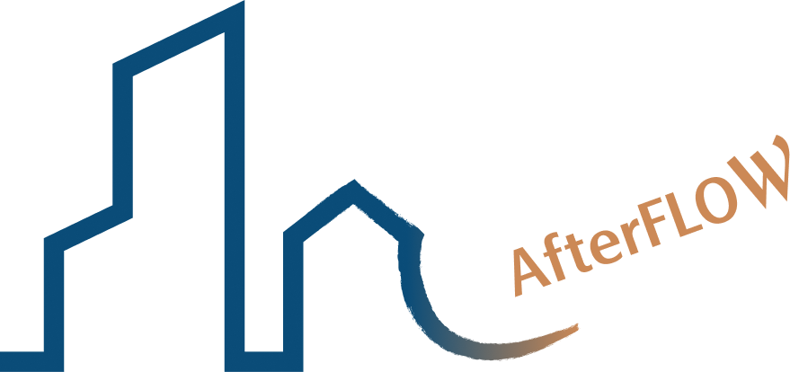
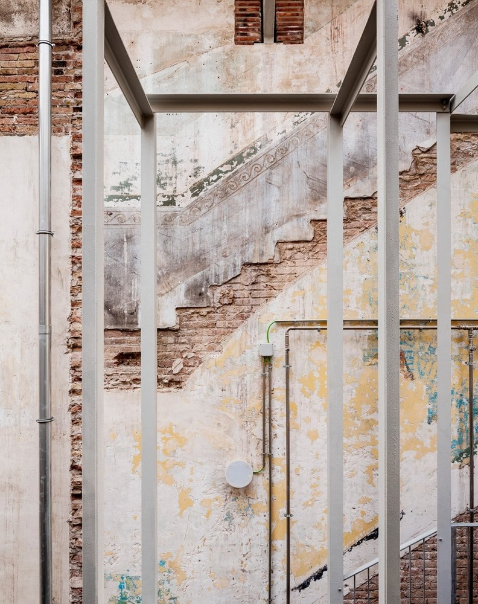
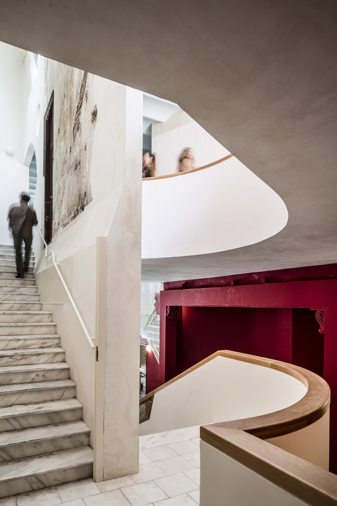
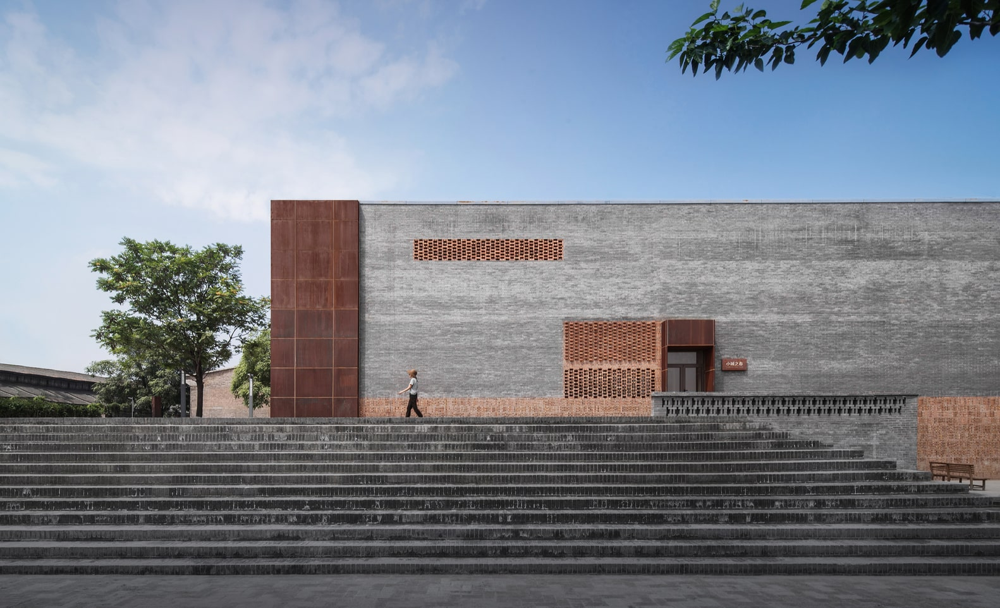
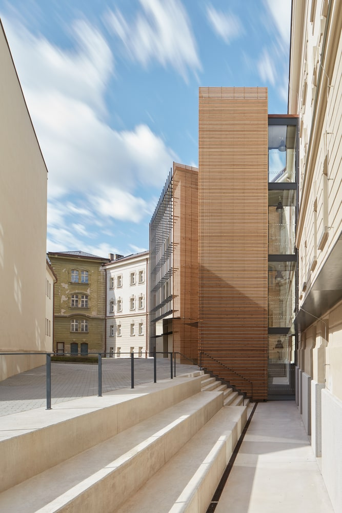
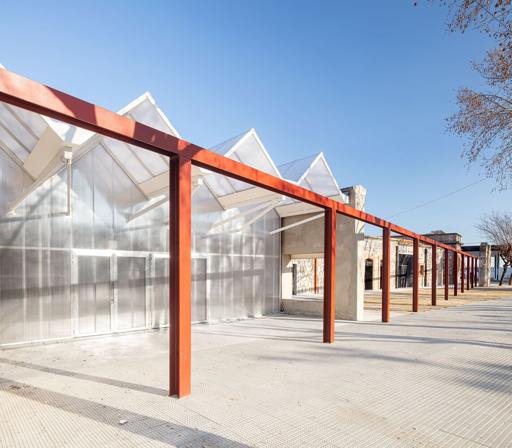
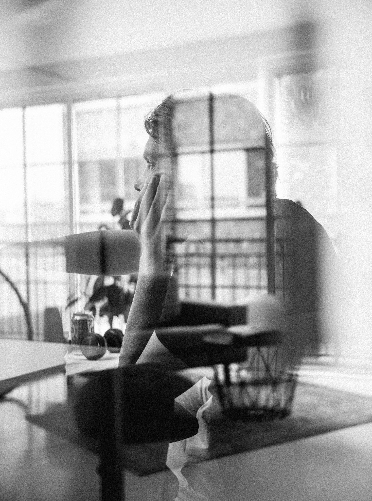

「起風了 AfterFLOW」 的核心，是個關於時間延續與空間重生的命題。
我們將建築視為一個活著的有機體，它隨著居住者的習慣、狀態和時代的更迭而不斷流動。如同自然界的風，由溫度和濕度的差異所啟動；空間的再生，亦源於對其承載情感與文化的珍視。
我們期許自己作為這場流動中的引導者。因此我們的第一步，從來不只是設計藍圖，而是與您共同探討：「這次，我們想要把什麼傳承下去？」無論是值得保留的舊工法、對材質的極致講究，抑或是深植於記憶中的生活情感。我們的工作是謙卑地審視過去，並堅實地走向未來。
AfterFLOW 堅信，真正的再生不是打掉重來，而是精煉與延續。我們以現代工藝與設計哲學，將您的意念與建築的歷史軸線精準地印記融合。讓每一寸空間都成為一個有層次感的敘事者，它既向過去致敬，也為未來低語。
我們的最終目標，是確保當風流過之後，這棟建築不僅是物質的容器，更是情感與文化的載體。邀請您與我們一起，建築空間的下一趟旅程，共同創造永恆的當代傳承。
About

When the wind has passed,
what whispers will the building keep within its walls?
當風流過之後，建築會記得什麼？





Style

時光｜PALIMPSEST
將舊有建材與結構視為珍貴的底圖，並在其上疊加現代元素。我們不隱藏歷史痕跡，而是透過光影與材質的交錯，創造出豐富的層次感。讓空間能同時講述過去的故事，並期待未來的生活。
場域再定義｜CADENCE
空間設計的核心回歸到居住者最珍視的「習慣」與「情感」。我們透過流暢的動線與開放的佈局，打破僵硬的邊界，讓人、光線、空氣能自由流動，讓建築成為生活的真實體現。
減法｜DISTILLATION
採用洗鍊且堅實的極簡主義工法。設計線條乾淨，材質選用上講究其耐久與生命力。我們追求的極簡，不是空無一物，而是透過減法，讓被保留下來的結構與細節，成為空間中最有力的永恆敘事。